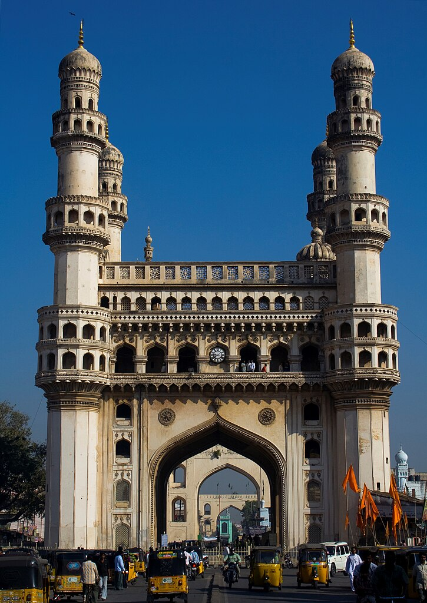
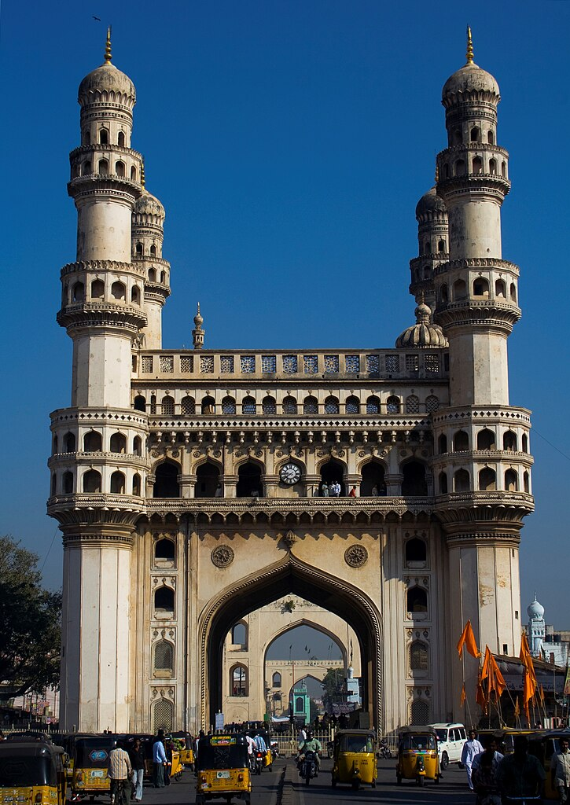
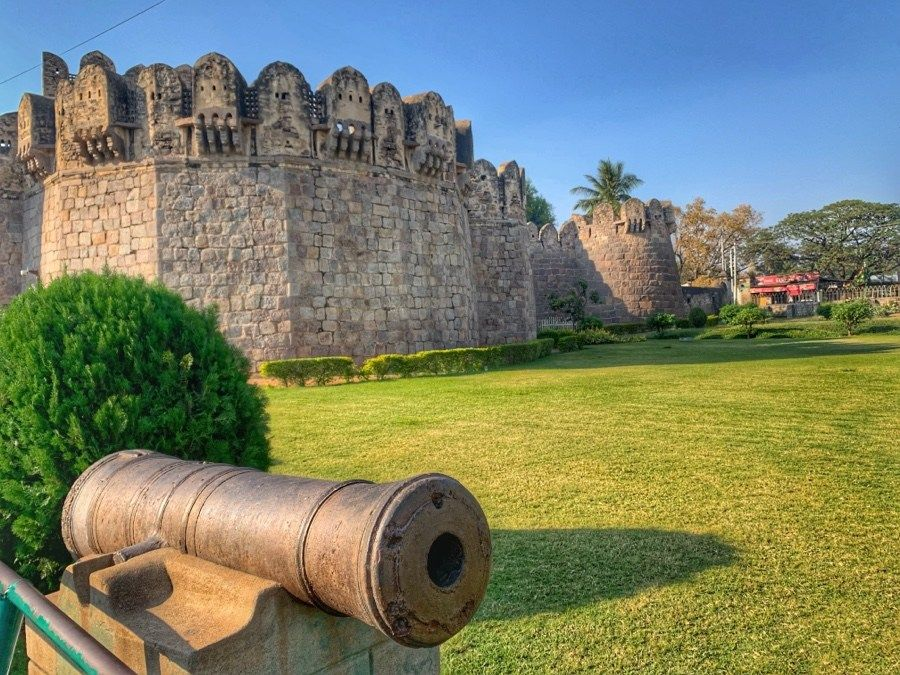
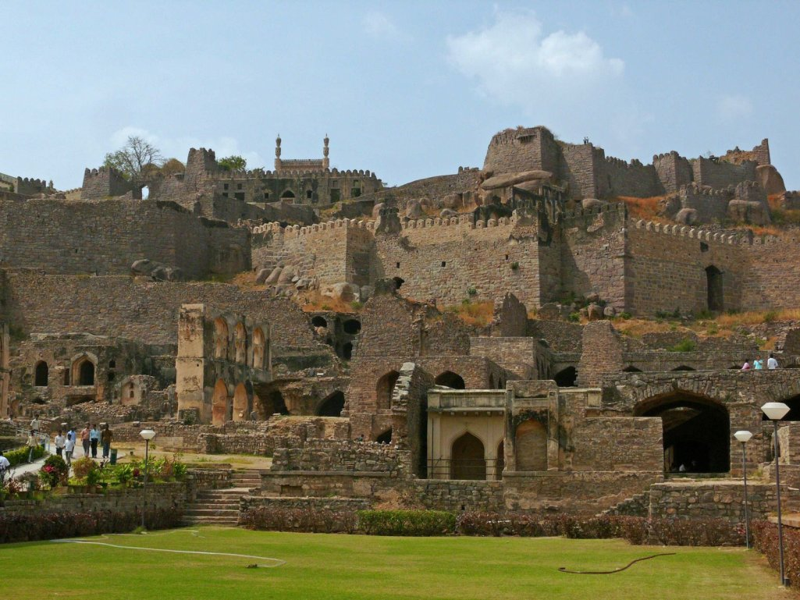

Charminar
Charminar, located in the heart of Hyderabad, is an iconic monument and mosque. Explore the historic structure, its four grand arches, and the bustling markets around it.

Charminar, located in the heart of Hyderabad, is an iconic monument and mosque. Explore the historic structure, its four grand arches, and the bustling markets around it.

Golkonda Fort, known for its impressive architecture and acoustic design, is a historical fort in Hyderabad. Discover the fort's history, royal palaces, and the famous Fateh Darwaza.
 Warangal Fort, located in the city of Warangal, is a medieval fort with rich historical significance. Explore the Kakatiya architecture, the Thousand Pillar Temple, and the Bhadrakali Temple.